🗺️ UV Unwrapping Basics
Learn the art and science of UV unwrapping—the crucial bridge between your 3D models and 2D textures. Master the techniques for mapping image textures onto any surface with minimal distortion and maximum control.
You've learned to create beautiful 3D models and physically accurate materials. But how do you add detailed textures—wood grain, fabric patterns, painted graphics, rust, dirt—to your surfaces? That's where UV unwrapping comes in. It's the essential skill that connects your 3D geometry with 2D texture images.
Think of UV unwrapping as the pattern-making process in garment design. Just as a tailor creates a flat paper pattern that will be sewn into a 3D garment, you create a flat UV layout that maps 2D images onto 3D surfaces. The quality of your unwrap determines how well textures fit, whether they stretch or distort, and how easy they are to paint or apply.
💡 The Gift Wrapping Analogy: Imagine trying to wrap a cube vs. a sphere with wrapping paper. The cube is easy—six flat pieces, no stretching needed. The sphere is challenging—you need to cut, fold, and stretch the paper to make it fit smoothly. UV unwrapping is about finding the best way to "unfold" any 3D shape into flat pieces that minimize stretching and distortion!
This lesson demystifies UV unwrapping. You'll understand what UV coordinates are, why they matter, and how to create clean, efficient unwraps for any object. By the end, you'll be able to apply photorealistic textures to your models with professional precision.
🎓 What You'll Learn
- UV Coordinate System: What U and V mean and how they map textures
- UV Editor Interface: Navigate and work efficiently in the UV Editor
- Seam Placement: Where to cut models for optimal unwrapping
- Unwrapping Methods: Automatic, smart UV project, cube projection, and more
- Minimizing Distortion: Techniques for clean, even texture mapping
- UV Layout and Packing: Organize UVs efficiently in texture space
- Testing Unwraps: Verify quality with checkerboard and test textures
- Common Object Types: Best practices for cubes, cylinders, spheres, organic shapes
⏱️ Estimated Time: 75-90 minutes
🎯 Project: Unwrap a complete character or prop model
In This Lesson
🧭 What Are UV Coordinates?
Before diving into unwrapping techniques, let's understand what UV coordinates actually are and why we need them.
The Problem: Mapping 2D to 3D
You have a 3D model in 3D space (X, Y, Z coordinates). You have a 2D texture image (just width and height). How do you tell Blender which part of the image goes where on the model? That's what UV coordinates solve!
📊 Coordinate Systems Explained
3D Model Space (X, Y, Z):
- X = Left/Right
- Y = Forward/Backward
- Z = Up/Down
- Your model exists here in 3D world
2D Texture Space (U, V):
- U = Horizontal (like X, but for 2D images)
- V = Vertical (like Y, but for 2D images)
- Range: 0.0 to 1.0 (covers entire image)
- Your texture image exists here in 2D space
Why U and V instead of X and Y? To avoid confusion with 3D coordinates! U and V are specifically for 2D texture space.
💡 The Grid Map Analogy: Imagine you have a paper map (texture image) and a 3D globe (your model). UV coordinates are like saying "this corner of Africa on the map goes to these coordinates on the globe." Every point on the 3D surface has corresponding U,V coordinates that tell it where to sample color from the 2D texture!
UV Space: The 0 to 1 Square
UV space is elegantly simple: it's always a square from 0.0 to 1.0 in both directions:
🔲 UV Space Layout
- Bottom-left corner: U=0.0, V=0.0
- Bottom-right corner: U=1.0, V=0.0
- Top-left corner: U=0.0, V=1.0
- Top-right corner: U=1.0, V=1.0
- Center: U=0.5, V=0.5
Key insight: UV coordinates are normalized (0-1 range) regardless of actual texture resolution. Whether your texture is 512×512 or 4096×4096, UV space is always 0-1!
How UV Mapping Works
Every vertex (point) on your 3D mesh stores UV coordinates in addition to its 3D position:
🎯 UV Mapping Process
- Each vertex has 3D coordinates: Position in world (X, Y, Z)
- Each vertex also has UV coordinates: Position in texture space (U, V)
- When rendering: Blender looks up UV coordinates for each surface point
- Samples texture at that UV location: Gets color from texture image
- Applies color to 3D surface: Your textured model appears!
X,Y,Z] --> B[Has UV Coords
U,V] B --> C[Look up color
in texture at U,V] C --> D[Apply color
to 3D surface] D --> E[Textured Model!] style A fill:#667eea,stroke:#333,stroke-width:2px,color:#fff style E fill:#4CAF50,stroke:#333,stroke-width:2px,color:#fff
UV Islands
When you unwrap a model, it typically breaks into separate pieces called "UV islands":
🏝️ UV Islands Explained
What is a UV island?
- A continuous, connected piece of your unwrapped mesh
- No breaks or seams within the island
- Like a single piece of flattened fabric
Why multiple islands?
- Complex 3D shapes can't unwrap as one flat piece without distortion
- Need to "cut" the mesh to flatten it
- Each cut creates new islands
- Trade-off: More islands = less distortion, but more seams to hide
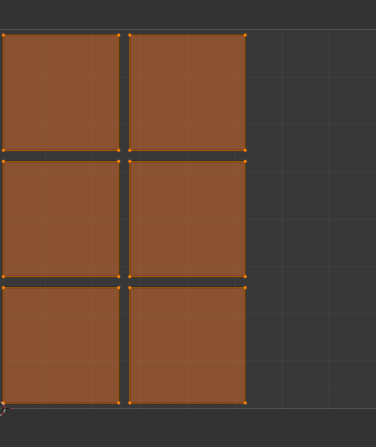
The Unwrapping Challenge
Here's the fundamental challenge of UV unwrapping:
⚠️ The Distortion Problem
You're trying to flatten a 3D surface into 2D space. This is mathematically impossible without some distortion—just like trying to flatten an orange peel perfectly flat!
Types of distortion:
- Stretching: Some areas get elongated
- Compression: Some areas get squished
- Shearing: Some areas get skewed
UV unwrapping skill = minimizing distortion through smart seam placement!
Good vs. Bad Unwraps
Let's look at what makes a UV unwrap good or bad:
✅ Characteristics of Good Unwraps
- Minimal distortion: Square textures look square on the model
- Even texel density: Texture resolution consistent across model
- Efficient packing: UVs use available texture space well
- Smart seam placement: Seams hidden in natural breaks or obscured areas
- Logical layout: Similar geometry pieces grouped together
- Ease of painting: Artist can paint textures intuitively
❌ Signs of Bad Unwraps
- Extreme stretching: Checker pattern warped beyond recognition
- Overlapping UVs: Multiple faces using same texture space
- Wasted space: Large empty areas in UV layout
- Tiny islands: Some pieces too small to texture effectively
- Visible seams: Cuts in obvious, high-visibility areas
- Inconsistent scale: Head gets 50% of texture, body gets 5%
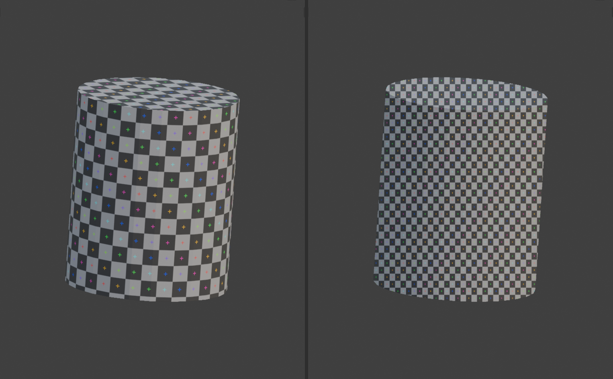
🖥️ The UV Editor Interface
The UV Editor is where all UV unwrapping magic happens. Let's get comfortable with this essential workspace before diving into unwrapping techniques.
Opening the UV Editor
There are several ways to access the UV Editor:
📝 Accessing UV Editor
Method 1: UV Editing Workspace (Recommended)
- Click the "UV Editing" tab at the top of Blender
- Screen splits automatically: 3D Viewport (right) + UV Editor (left)
- Perfect layout for UV work!
Method 2: Change Any Editor to UV Editor
- Click editor type icon (overlapping squares) in any editor corner
- Select "UV Editor" from dropdown
- That editor becomes UV Editor
Method 3: Split Screen Manually
- Drag from corner of viewport to split screen
- Change new editor to UV Editor
- Arrange as needed
💡 Workspace Tip: The UV Editing workspace is pre-configured perfectly for unwrapping work. UV Editor on left, 3D Viewport on right—you can see your model and its UV layout simultaneously. Select something in 3D, see it selected in UV Editor instantly. This immediate feedback is crucial!
UV Editor Anatomy
Let's understand what you're looking at in the UV Editor:
🎨 UV Editor Components
Main Canvas (the grid):
- Represents UV space (0-1 range in both directions)
- Your unwrapped UVs appear here
- Background can show texture image for reference
Header (Top Bar):
- View controls: Zoom, pan, frame options
- Select mode: Vertex, Edge, Face selection
- UV menu: Unwrap, pack, align tools
- Image selector: Choose which texture to display
Sidebar (N key to toggle):
- Tool tab: Active tool settings
- View tab: Display options, overlays
- Image tab: Texture properties
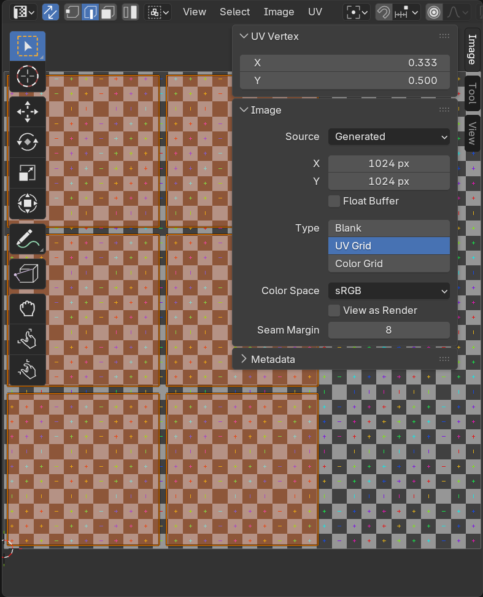
Navigation in UV Editor
UV Editor navigation is similar to 3D Viewport but 2D-specific:
🎮 UV Editor Navigation
| Action | Shortcut | Mouse Alternative |
|---|---|---|
| Pan View | Shift + Middle Mouse |
Click and drag in empty space |
| Zoom | Scroll Wheel |
Ctrl + Middle Mouse + Drag |
| Frame All | Home |
View → Frame All |
| Frame Selected | Numpad . |
View → Frame Selected |
| Zoom to Fit | Shift + B (box zoom) |
Drag box around area |
Selection Modes in UV Editor
Just like in 3D Viewport, UV Editor has vertex, edge, and face selection modes:
🎯 UV Selection Modes
Vertex Select Mode (1 key):
- Select individual UV points
- Precise control for adjustments
- Good for: Fine-tuning, aligning specific points
Edge Select Mode (2 key):
- Select UV edges
- Useful for seam marking and edge alignment
- Good for: Straightening edges, marking seams
Face Select Mode (3 key):
- Select entire UV faces/islands
- Fastest for moving whole sections
- Good for: Island manipulation, packing, layout
Sync Selection (button in header):
- When ON: UV Editor selection syncs with 3D Viewport
- When OFF: Can select different things in each editor
- Usually keep ON for intuitive workflow
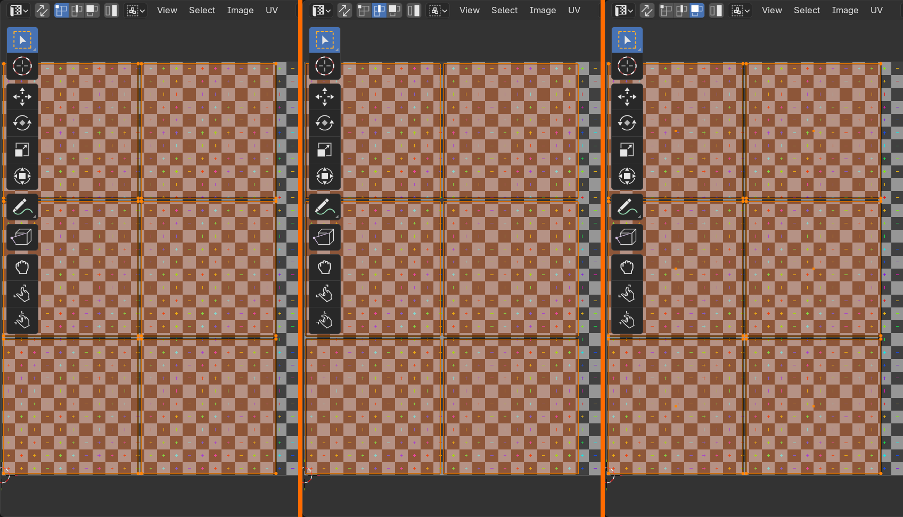
UV Selection Tools
Several selection tools make UV editing more efficient:
🔧 Essential UV Selection Tools
Box Select (B key):
- Drag box to select multiple UVs
- Left-click to confirm, right-click to cancel
- Fast for selecting regions
Circle Select (C key):
- Paint selection with circular brush
- Scroll wheel to adjust brush size
- Left-click to add, Middle-click to remove
- Esc or right-click to exit
Lasso Select (Ctrl + Right-click + Drag):
- Draw freeform selection shape
- Good for irregular selections
Select Linked (L key with mouse over):
- Hover over UV, press L
- Selects entire connected island
- Incredibly useful for manipulating islands
Select All (A key):
- Toggles between select all / deselect all
Displaying Textures in UV Editor
You can display texture images in the UV Editor background to see how UVs align:
🖼️ Working with Texture Display
Loading a texture:
- In UV Editor header, find image selector dropdown
- Click "New" to create test image or "Open" to load existing
- Image appears as background in UV Editor
- Your UVs overlay the image
Useful test textures:
- UV Grid/Checker: Shows stretching and distortion clearly
- Color ID map: Different colors for different islands
- Actual texture: Preview how final texture looks
Creating UV Grid texture:
- Image → New
- Name: "UV_Test"
- Check "UV Grid" option
- Click OK
- Perfect for testing distortion!
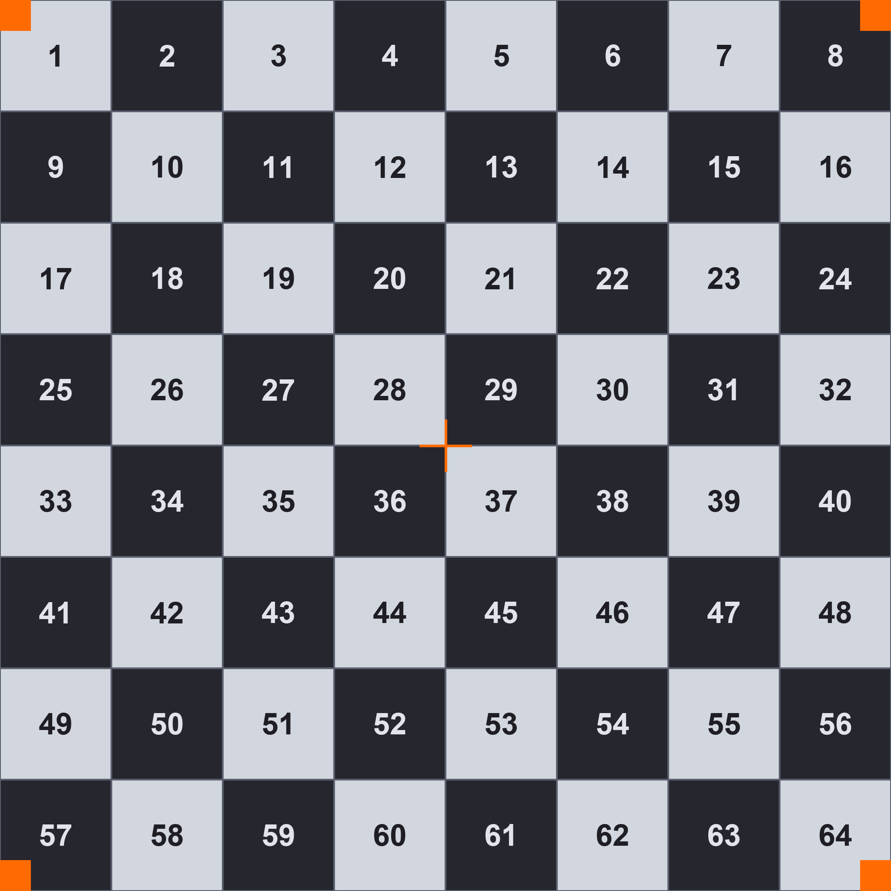
🎯 The Checker Test: Professional UV artists always test unwraps with a checker/grid texture. If squares look square on your model (not stretched into rectangles), your unwrap has minimal distortion. If checker pattern is warped, you have stretching that needs fixing. This simple test reveals all distortion issues instantly!
UV Editor Display Options
Several display options help you work more effectively:
👁️ Display Settings
UV Overlay (top-right dropdown in UV Editor):
- Display As: Choose between Outline, Dash, or Black
- Stretch: Shows distortion as colored overlay
- Blue = compressed areas
- Green = good, minimal distortion
- Red/Yellow = stretched areas (problem zones)
Useful overlay toggles:
- Modified Edges: Shows edges that have been modified (orange)
- Image Opacity: Fade texture background to see UVs better
- Grid: Show reference grid over UV space
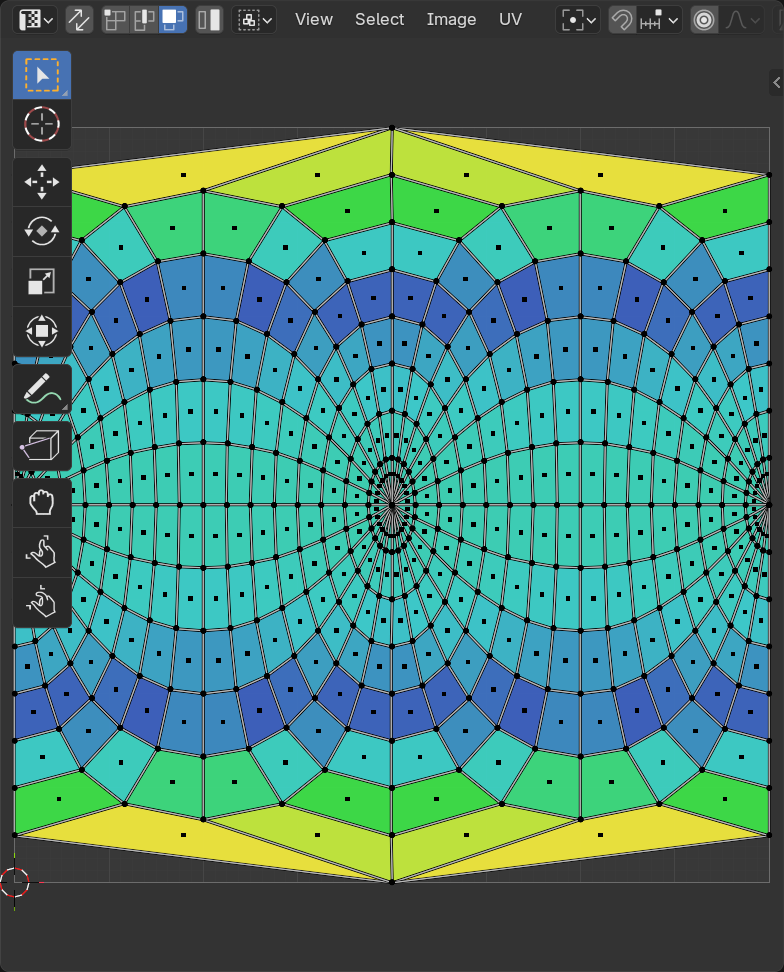
Basic UV Manipulation Tools
Once UVs are unwrapped, you'll often need to adjust them. Here are the fundamental tools:
🔧 UV Transformation Tools
Move/Grab (G key):
- Select UVs, press G, move mouse
GthenXorYto constrain axis- Type numbers for precise movement
Rotate (R key):
- Select UVs, press R, move mouse to rotate
- Type angle in degrees (e.g., "90" for 90°)
Scale (S key):
- Select UVs, press S, move mouse to scale
SthenXorYto scale on one axis- Type scale factor (e.g., "2" for double size)
Pin UVs (P key):
- Selected UVs won't move during unwrap operations
- Useful for locking corners or specific points
Alt+Pto unpin
UV Tools and Operations
The UV menu in the header contains essential operations:
📋 Essential UV Menu Operations
Unwrap (U key):
- Main unwrap operation (we'll cover in detail later)
- Uses marked seams to flatten model
Pack Islands:
- Automatically arranges UV islands efficiently
- Maximizes texture space usage
- Rotates islands to fit better
Average Islands Scale:
- Makes all islands have consistent texel density
- Ensures uniform texture resolution across model
- Use after unwrapping, before packing
Align:
- Align selected UVs to axes
- Straighten edges
- Align islands to grid
Stitch (V key):
- Merge selected UV vertices together
- Useful for fixing seams or connecting islands
Quick Setup for UV Work
Here's the optimal setup for UV unwrapping workflow:
✅ Recommended UV Workspace Setup
- Switch to UV Editing workspace (tab at top)
- In 3D Viewport (right side):
- Set to Edit Mode (
Tab) - Turn on "X-Ray" mode (
Alt+Z) to see through model - Enable face selection mode (
3)
- Set to Edit Mode (
- In UV Editor (left side):
- Load a UV Grid test texture (Image → New → UV Grid)
- Turn on Stretch overlay to see distortion
- Enable Sync Selection
- Select your model in 3D Viewport
- You're ready to unwrap!
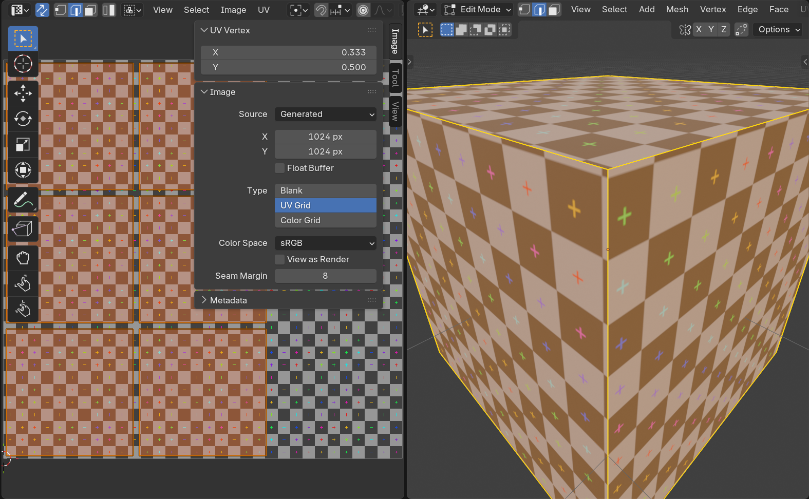
Common UV Editor Issues
⚠️ Troubleshooting UV Editor
Problem: UV Editor is blank/empty
- Cause: No mesh selected or mesh has no UVs yet
- Fix: Select object in 3D view, enter Edit Mode, unwrap it
Problem: Can't see texture image in UV Editor
- Cause: No image loaded in material or UV Editor
- Fix: Load image via image selector dropdown in UV Editor header
Problem: Selection in UV Editor doesn't match 3D Viewport
- Cause: Sync Selection is OFF
- Fix: Enable "Sync Selection" button in UV Editor header
Problem: UVs outside the 0-1 square
- Not always a problem: UVs can exist outside 0-1 (texture tiles or repeats)
- To move back: Select all (
A), scale (S) and move (G) to fit
Problem: Can't select UVs
- Cause: In Object Mode instead of Edit Mode
- Fix: Press
Tabto enter Edit Mode
Pro Tips for UV Editor Efficiency
✅ UV Editor Best Practices
- Always use UV Grid for testing: Shows distortion instantly
- Keep Sync Selection ON: Intuitive workflow between 3D and UV
- Use L (Select Linked) constantly: Fastest way to select islands
- Learn keyboard shortcuts: G/R/S for move/rotate/scale essential
- Frame Selected often:
Numpad .keeps you focused - Use stretch overlay: Visual feedback on distortion quality
- Work in Face Select mode: Usually fastest for island manipulation
- Save incrementally: UV work takes time, save progress often!
✂️ Seams and Unwrapping Concepts
Understanding seams is the key to successful UV unwrapping. Seams are where you "cut" your 3D model to flatten it into 2D. Smart seam placement is what separates good unwraps from bad ones.
What Are Seams?
Think of seams as cut lines that allow your 3D model to be flattened:
✂️ Seam Fundamentals
What is a seam?
- An edge marked as a "cut" in your mesh
- When unwrapping, Blender splits the mesh at seams
- Creates boundaries between UV islands
- Shown as red edges in 3D Viewport (when in Edit Mode)
Why do we need seams?
- Most 3D shapes can't flatten perfectly without cuts
- Seams allow complex geometry to unwrap with minimal distortion
- Trade-off: More seams = less distortion, but more visible cuts
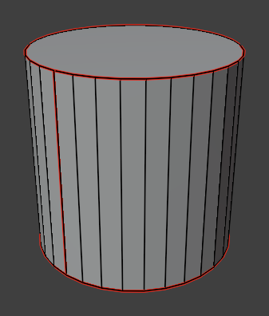
💡 The Cardboard Box Analogy: Imagine unfolding a cardboard box. You need to cut along specific edges to lay it flat. Those cuts are seams! The box naturally has edges where panels meet—those are logical seam locations. Similarly, 3D models have natural seam locations where cuts will be least visible.
Marking Seams
Here's how to mark and unmark seams in Blender:
📝 Seam Operations
To mark seams:
- Enter Edit Mode (
Tab) - Switch to Edge Select Mode (
2key) - Select edge(s) you want to mark as seams
- Right-click → Mark Seam
- Or press
Ctrl+E→ Mark Seam - Edges turn red (seam color)
To clear seams:
- Select seam edge(s)
- Right-click → Clear Seam
- Or
Ctrl+E→ Clear Seam - Edges return to normal color
To select all seams:
- In Edit Mode, deselect all (
Alt+A) - Select → Select All by Trait → Seams
- All seam edges become selected
Strategic Seam Placement
Where you place seams dramatically affects unwrap quality. Here are the golden rules:
✅ Seam Placement Strategy
Preferred seam locations:
- Hidden areas: Undersides, inside surfaces, backs of objects
- Natural breaks: Where materials change (skin to clothing, different parts)
- Geometric edges: Sharp edges, corners, hard surface transitions
- Occlusion areas: Places shadowed or not visible in typical views
- Symmetry lines: Center line of symmetric models (if using mirrored UVs)
Avoid seams in:
- Middle of smooth, visible surfaces (creates visible texture discontinuity)
- Faces/prominent features (seams on faces are very noticeable)
- Areas that will be painted with continuous patterns
- Hero areas (the parts that get the most screen time/attention)
⚠️ The Seam Visibility Trade-off
The fundamental dilemma:
- Too few seams: Excessive stretching and distortion
- Too many seams: Lots of visible discontinuities
The solution: Strategic placement—just enough seams to minimize distortion, placed in locations where discontinuities won't be noticed!
Seam Patterns for Common Shapes
Let's look at standard seam patterns for basic primitives:
📦 Cube Seam Pattern
Strategy: Create a cross pattern (like unfolding a cardboard box)
- Mark 7 edges total
- Creates 6 separate squares (one per face) OR
- Creates cross/T-shape layout (connected faces)
- Zero distortion—cubes unwrap perfectly!
Seam placement:
- Option 1: Edge loop around middle + vertical cuts = cross pattern
- Option 2: Cut all but 5 edges to keep faces connected in useful layout
🔵 Cylinder Seam Pattern
Strategy: Single vertical seam
- Mark one vertical edge from top to bottom
- Optionally: Add seams at top and bottom edges (caps)
- Unwraps into rectangle (for barrel) + two circles (for caps)
Seam placement:
- Put vertical seam on back or underside (least visible)
- For labels/text, place seam opposite the front
⚪ Sphere Seam Pattern
Strategy: Longitude and latitude cuts (like an orange)
- Mark vertical seam from pole to pole (one longitude line)
- Optionally: Add horizontal seam at equator
- Creates strips that minimize distortion
Challenge: Spheres always have some distortion—it's mathematically impossible to flatten perfectly!
Advanced: For characters, use multiple vertical strips (orange peel pattern) for better results
The Unwrap Algorithm
Understanding what happens when you press "Unwrap" helps you plan better seams:
🔄 How Unwrap Works
- Identify islands: Finds continuous mesh sections between seams
- Flatten each island: Uses mathematical algorithm to lay island flat
- Minimize distortion: Tries to keep angles and relative sizes correct
- Arrange in UV space: Places islands in 0-1 UV square
Unwrap methods:
- Angle Based (default): Preserves angles, good for most uses
- Conformal: Preserves local shapes, better for organic models
Testing Your Seam Layout
Before unwrapping, you can preview how seams will affect the result:
🧪 Seam Testing Workflow
- Mark initial seams based on strategy
- Unwrap (
U→ Unwrap) - Check UV Editor: How many islands? Are they reasonable?
- Apply UV Grid texture to model
- Look for distortion:
- Squares should look square
- Grid lines should be parallel and perpendicular
- No excessive stretching
- If distortion is bad:
- Add seams in stretched areas
- Unwrap again
- Repeat until satisfied
Smart UV Project vs. Manual Seams
Blender offers automatic seam creation, but manual seaming gives better control:
⚖️ Manual Seams vs. Smart UV Project
Manual seam marking + Unwrap:
- Pros: Full control, optimal seam placement, fewer islands
- Cons: Time-consuming, requires planning
- Best for: Hero assets, characters, products, anything important
Smart UV Project (automatic):
- Pros: Fast, automatic, no seam marking needed
- Cons: Many islands, seams everywhere, less control
- Best for: Background objects, quick tests, hard-surface with many faces
Common Seam Mistakes
⚠️ Seam Placement Pitfalls
Mistake 1: No seams at all
- Problem: Blender doesn't know where to cut
- Result: Awful distortion or failed unwrap
- Fix: Mark seams before unwrapping!
Mistake 2: Too few seams (trying to minimize cuts)
- Problem: Forcing complex geometry to unwrap as one island
- Result: Extreme stretching and distortion
- Fix: Add strategic seams in high-distortion areas
Mistake 3: Seams through visible areas
- Problem: Seam running across character's face, front of product, etc.
- Result: Visible texture discontinuity
- Fix: Move seams to edges, backs, undersides, natural breaks
Mistake 4: Random, unplanned seam placement
- Problem: Just clicking edges without strategy
- Result: Chaotic UV layout, hard to texture
- Fix: Plan seam layout before marking—think about how it will unwrap
Mistake 5: Not testing unwrap iteratively
- Problem: Marking all seams at once, unwrapping once
- Result: Issues discovered too late
- Fix: Unwrap frequently during seam marking to test results
Advanced Seam Techniques
As you get more experienced, these techniques become valuable:
🎯 Advanced Seaming Strategies
Seam from selection:
- Select edge loop with
Alt+Click - Instantly mark entire loop as seam
- Fast for cylindrical objects
Sharp edges as seams:
- Use sharp edges (from Edge Split modifier or marked sharp) as seam guides
- Natural locations for seams on hard-surface models
Symmetrical seam placement:
- For symmetrical models, place seams symmetrically
- Allows mirroring UVs for efficient texture use
- One side of character can use same texture space as other side
Seam "loops" strategy:
- Create closed loops of seams to define UV islands
- Each loop = one island boundary
- Think: "I want this part to be one island, so I'll loop seams around it"
The Iterative Seaming Process
Professional UV artists don't get seams perfect on first try. Here's the real workflow:
✅ Professional Seaming Workflow
- Plan strategically:
- Look at model, identify natural seam locations
- Think about how it will unwrap
- Consider what areas need most texture detail
- Mark initial seams:
- Start with obvious locations (edges, backs, undersides)
- Create logical island divisions
- Test unwrap:
Ato select all,U→ Unwrap- Check result in UV Editor
- Evaluate distortion:
- Apply UV Grid texture
- Enable Stretch overlay in UV Editor
- Identify problem areas (red/yellow stretching)
- Refine seams:
- Add seams in distorted areas
- Remove unnecessary seams from good areas
- Adjust seam placement for better visibility
- Unwrap again and test:
- Repeat until distortion is minimal
- And seams are in acceptable locations
- Finalize:
- Accept that some distortion is inevitable
- Compromise between perfection and practicality
🎯 The 80/20 Rule for Seaming: You can achieve 80% of optimal unwrap quality with 20% of the effort by focusing on: (1) Hiding seams in logical locations, (2) Adding seams where you see obvious stretching, (3) Testing frequently with UV Grid texture. Don't obsess over perfection—get it "good enough" and move on!
🎯 Unwrapping Methods and Commands
Now that you understand seams, let's explore the actual unwrapping commands. Blender offers several unwrapping methods, each designed for different situations and model types.
The Main Unwrap Command
This is the command you'll use most often—it's the workhorse of UV unwrapping:
📦 Standard Unwrap
How to use it:
- Enter Edit Mode (
Tab) - Select faces you want to unwrap (or
Afor all) - Press
Uto open UV Mapping menu - Select "Unwrap"
- Results appear in UV Editor
What it does:
- Uses your marked seams to cut the mesh
- Flattens each island with minimal distortion
- Automatically arranges islands in UV space
- Preserves relative proportions
Method options (in operator panel):
- Angle Based: Default, good general-purpose unwrapping
- Conformal: Better for organic shapes, preserves angles better
💡 Think of Unwrap Like This: Imagine you're carefully unfolding a origami figure. You cut along the seams (where you marked them), then gently flatten each section trying to minimize creasing or stretching. The Unwrap command does this mathematically, finding the flattest representation possible!
✅ When to Use Standard Unwrap
- Best for: Models with properly marked seams
- Ideal situations: Organic models, characters, creatures, props
- Requirement: You've marked seams strategically
- Advantage: Maximum control over island layout
- Result: Clean, predictable UV islands
Smart UV Project
This is the automatic unwrapping method—perfect when you need quick results:
🤖 Smart UV Project
How to use it:
- Enter Edit Mode
- Select faces to unwrap (
Afor all) - Press
U→ Smart UV Project - Adjust settings in operator panel (optional)
- Confirm
What it does:
- Automatically calculates optimal projection angles
- Creates seams automatically (ignores your manual seams)
- Projects mesh from multiple directions
- Creates many small islands
Key settings:
- Angle Limit: Controls how much faces can deviate (lower = more islands)
- Island Margin: Spacing between islands (prevents texture bleeding)
- Area Weight: Prioritizes larger faces (keeps them less distorted)
⚠️ Smart UV Project Trade-offs
Advantages:
- Super fast—no seam marking required
- Great for complex hard-surface models
- Minimal distortion on each island
- Perfect for quick tests or background objects
Disadvantages:
- Creates MANY small islands (harder to texture paint)
- Seams everywhere (visible texture breaks)
- Less efficient texture space usage
- Not ideal for hand-painted textures
Project from View
This projects the UV coordinates based on your current viewport view:
📷 Project from View
How to use it:
- Position your 3D Viewport to desired angle
- Select faces in Edit Mode
- Press
U→ Project from View - UVs are projected exactly as you see them
What it does:
- Creates flat projection from camera angle
- Like taking a photo and using it as UV map
- No consideration of 3D shape—purely 2D projection
Best uses:
- Applying decals (logos, labels, signs)
- Projecting photographs onto surfaces
- Quick placeholder UVs
- Flat surfaces viewed from one angle
Limitation: Faces not visible from view angle get distorted or stacked UVs
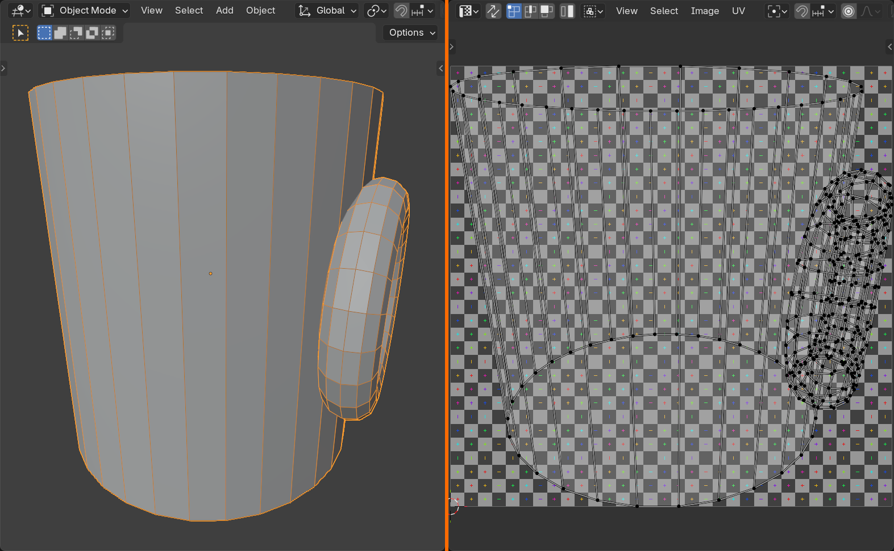
Cube Projection
Projects UVs as if wrapping a cube around your object:
📦 Cube Projection
How it works:
- Projects from 6 directions (like sides of a cube)
- Each face gets assigned to closest projection direction
- Automatic seams at projection boundaries
Best for:
- Box-like objects (buildings, furniture, containers)
- Hard-surface models with clear sides
- Architectural elements
Settings:
- Cube Size: Scale of projection box
- Correct Aspect: Maintain proportions
- Clip to Bounds/Scale to Bounds: Fit UVs in 0-1 space
Cylinder and Sphere Projections
Specialized projections for round objects:
🔵 Cylinder Projection
How it works:
- Wraps UVs around a cylindrical shape
- Like wrapping a label around a can
- Vertical axis maps to one UV direction
- Horizontal wrapping maps to other UV direction
Perfect for:
- Cylindrical objects (cans, bottles, columns, pipes)
- Arms and legs (character modeling)
- Tree trunks
Tip: Align object to viewport axis before projecting for best results
⚪ Sphere Projection
How it works:
- Projects UVs as if wrapping around a sphere
- Like a globe map projection (latitude/longitude)
- Creates characteristic "pole pinching" at top/bottom
Perfect for:
- Spherical objects (planets, balls, heads)
- Dome structures
- Round organic forms
Known issue: Always has distortion at poles—mathematically unavoidable!
Unwrap Method Comparison
Here's a quick reference for choosing the right unwrap method:

| Method | Best For | Requires Seams? | Distortion | Speed |
|---|---|---|---|---|
| Unwrap | Organic models, characters, hero assets | Yes | Low (with good seams) | Fast |
| Smart UV Project | Hard surface, background objects, quick tests | No | Very low per island | Very fast |
| Project from View | Decals, labels, flat surfaces | No | High on non-facing surfaces | Instant |
| Cube Projection | Box-like objects, architecture | No | Low for cubic shapes | Fast |
| Cylinder Projection | Cylindrical objects, limbs | No | Low for cylinders | Fast |
| Sphere Projection | Spherical objects, planets | No | Pole pinching inevitable | Fast |
Unwrap Settings and Options
After executing an unwrap command, you can adjust settings in the operator panel:
⚙️ Common Unwrap Options
Method (Unwrap command):
- Angle Based: Default algorithm, balanced results
- Conformal: Preserves angles better, good for organic shapes
Fill Holes:
- Automatically fills in missing faces during unwrap
- Useful for models with holes or open edges
Correct Aspect:
- Maintains proportions relative to 3D model
- Prevents UVs from being squished or stretched
- Usually keep this ON
Use Subdivision Surface:
- Unwraps as if Subdivision Surface modifier is applied
- Smoother UVs for subdivided models
Margin:
- Space between UV islands (measured in UV units)
- Prevents texture bleeding between islands
- Typical value: 0.001 to 0.01
🎯 Pro Tip: Always check the operator panel immediately after unwrapping! You can tweak settings like margin, method, and aspect correction without having to unwrap again. The settings stick until you perform another operation.
🖥️ Working in the UV Editor
The UV Editor is where you'll spend most of your time during the UV unwrapping process. Let's master this crucial workspace!
Opening the UV Editor
There are several ways to access the UV Editor:
📂 Accessing UV Editor
Method 1: Switch workspace
- Click "UV Editing" tab at top of Blender window
- Gives split view: 3D Viewport (left) + UV Editor (right)
- Most convenient for unwrapping workflow
Method 2: Change editor type
- Click editor type icon (top-left corner of any editor)
- Select "UV Editor" from menu
- Converts current editor to UV Editor
Method 3: Split view manually
- Drag corner of editor to split
- Change one side to UV Editor
- Customize layout as needed
UV Editor Interface Overview
Let's understand what you're looking at in the UV Editor:
🗺️ UV Editor Components
Main elements:
- UV Grid: The square workspace (0-1 UV space)
- UV Islands: Your unwrapped mesh shown as 2D shapes
- Background Image: Optional texture or UV test grid
- Toolbar (left): Selection and transformation tools
- Sidebar (N key): Properties and UV statistics
- Header (top): View options, sync settings, display modes
The UV grid explained:
- 0-1 square: Standard UV space (entire texture fits here)
- Outside 0-1: UVs can go outside, texture will tile/repeat
- Grid lines: Help with alignment and positioning
✅ Understanding UV Space
The UV Editor shows a normalized 0-1 square. Here's what that means:
- Bottom-left corner = (0, 0)
- Top-right corner = (1, 1)
- Any point in square = coordinate from 0 to 1 in each direction
- Your texture image maps to this exact square
- UVs filling the square = texture fully utilized
Why 0-1? It's resolution-independent! Same UVs work with 512px, 2048px, or 4K textures.
UV Editor Selection Tools
Selection works similarly to 3D Viewport, but with some UV-specific features:
🎯 UV Selection Modes
Selection modes (same keys as 3D):
1- Vertex select mode2- Edge select mode3- Face select mode
Selection tools:
- Box Select:
B- Drag rectangle to select - Circle Select:
C- Paint selection with circle brush - Lasso Select:
Ctrl+Shift- Freehand selection - Select All:
A- Select everything - Deselect All:
Alt+A- Deselect everything - Invert Selection:
Ctrl+I- Flip selection
Advanced selection:
- Select Linked:
L(mouse over) - Select entire UV island - Select Linked (all):
Ctrl+L- Select all UVs connected to current selection - Select More/Less:
Ctrl+Plus/Minus- Grow/shrink selection
⚠️ UV Editor Selection Sync
Important concept: Selection syncing
When you select something in 3D Viewport, the corresponding UVs select in UV Editor (and vice versa). This is controlled by the UV Sync Selection button in UV Editor header.
UV Sync Selection ON:
- 3D and UV selections are locked together
- Select in one view, it selects in both
- Great for finding which UVs belong to which faces
UV Sync Selection OFF:
- 3D and UV selections are independent
- Can select different things in each view
- Better for UV-specific operations (selecting by UV layout)
Toggle: Click magnet icon in UV Editor header, or use keyboard shortcut
Transforming UVs
Move, rotate, and scale UVs just like 3D objects:
🔄 UV Transformation
Basic transforms (same as 3D):
- Move:
G- Grab and move selected UVs - Rotate:
R- Rotate around median point - Scale:
S- Scale up or down
Constrained movement:
GthenX- Move only horizontally (U direction)GthenY- Move only vertically (V direction)SthenXorY- Scale in one direction only
Numeric input:
- After
G/R/S, type number for precise control - Example:
S,2,Enter- Scale 2x - Example:
G,X,0.5,Enter- Move 0.5 units in U
Pivot point:
- Set pivot point in header (same as 3D: Median, Individual Origins, etc.)
- Affects rotation and scale center point
UV Editor Display Options
Customize what you see to make UV work easier:
👁️ Display Settings
View menu options:
- Frame All:
Home- Fit all UVs in view - Frame Selected:
Numpad Period- Zoom to selected UVs - Zoom: Scroll wheel or
Ctrl+Middle Mouse - Pan:
Middle Mousedrag
Overlays (in header):
- Show Stretch: Display distortion as color overlay
- Blue = No distortion
- Green = Minimal distortion
- Yellow/Orange = Some distortion
- Red = Heavy distortion
- Show Modified Edges: Highlight seams and sharp edges
- Show Face Orientation: Check for flipped faces (blue vs red)
Background image:
- Shows texture behind UVs
- Helps with precise placement
- Toggle in Sidebar (N) → Image panel
💡 The Stretch Overlay is Your Best Friend: Enable stretch display (usually Ctrl+T or in overlays menu) to instantly see problem areas. Blue = good, red = bad. This single visual tool will save you hours of guesswork when optimizing UVs!
Selecting UV Islands
UV islands are individual pieces of your unwrapped mesh. Learning to select them efficiently is crucial:
🏝️ Island Selection Techniques
Select entire island:
- Hover mouse over any part of island
- Press
L- Selects all connected UVs - Fastest way to grab an island
Select multiple islands:
Lover first islandShift+Lover additional islands- Adds to selection
Box select islands:
Bfor box select- Draw box around islands
- Selects all UVs within box
Select overlapping islands:
- Select → Select Overlap
- Finds islands stacked on top of each other
- Useful for fixing UV layout issues
UV Editor Sidebar Tools
Press N to toggle the sidebar with additional UV information and tools:
📊 Sidebar Panels
Transform panel:
- Shows exact location, rotation, scale of selected UVs
- Type values for precise positioning
- Useful for aligning UVs to specific coordinates
Image panel:
- Select which texture to display
- Pin image (keep showing even when selecting different objects)
- Adjust UV/Image display settings
UDIM Grid:
- For advanced workflows using multiple texture tiles
- Shows grid of 1x1 squares (UDIM tiles)
- Each tile can hold different texture
View panel:
- Repeat image (tiling) settings
- Grid display options
- View customization
🎨 Manipulating UV Islands
Once you've unwrapped your model, you'll need to arrange, orient, and optimize the UV islands. This is where artistic judgment meets technical skill!
Packing UV Islands
UV packing is the process of arranging islands efficiently within the 0-1 UV space to maximize texture resolution:
📦 UV Packing Basics
What is packing?
- Arranging UV islands to fill UV space efficiently
- Minimizes wasted texture space
- Maximizes resolution for every surface
- Like playing Tetris with your UVs!
Manual packing method:
- Select islands you want to pack
- Use
G,R,Sto move, rotate, scale - Arrange to minimize gaps
- Leave small margin between islands (prevent texture bleeding)
Automatic packing:
- Select all UVs (
Ain UV Editor) - Go to UV menu → Pack Islands
- Or right-click → Pack Islands
- Blender automatically arranges for best fit
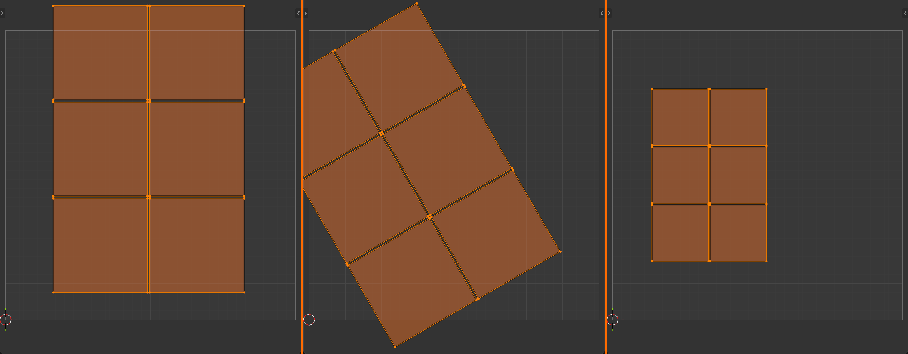
G to move, R to rotate, and S to scale a selected island, exactly like transforming objects in the 3D viewport.✅ Pack Islands Settings
Key options (in operator panel after packing):
- Margin: Space between islands (default: 0.001)
- Too small = texture bleeding (colors leak between islands)
- Too large = wasted space
- Recommended: 0.001 to 0.005
- Rotate: Allow islands to rotate for better fit
- Can enable for maximum efficiency
- Disable if you need specific orientations
- Shape Method:
- AABB: Axis-aligned bounding box (fast, less precise)
- Convex Hull: Wraps tighter (slower, more efficient)
- Concave: Best fit (slowest, most efficient)
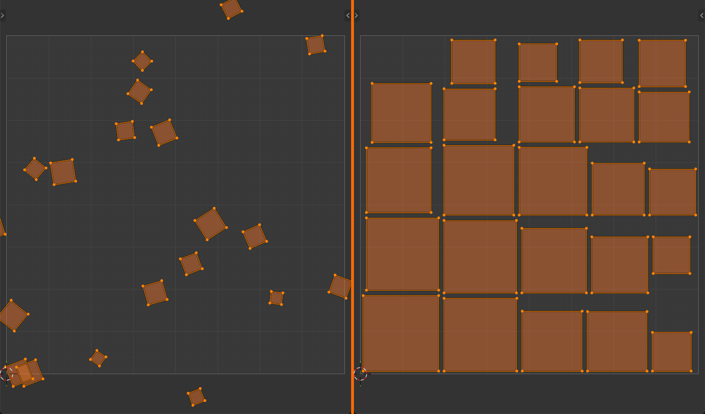
💡 The Texture Budget Concept: Think of UV space like a budget. Every pixel of your texture is valuable! If islands only use 50% of UV space, you're wasting 50% of your texture resolution. Good packing means getting the most detail possible from every pixel!
Scaling Islands Proportionally
One of the most important UV concepts: different islands should have appropriate relative sizes:
📏 Proportional Island Scaling
Why it matters:
- Islands should be sized relative to their 3D surface area
- Larger 3D surfaces → larger UV islands (more texture pixels)
- Smaller 3D surfaces → smaller UV islands (fewer pixels)
- Maintains consistent texture density across entire model
The problem with non-proportional scaling:
- Small detail gets huge UV space = excessive resolution (wasted)
- Large surface gets tiny UV space = blurry texture (bad quality)
- Inconsistent texture sharpness across model
How to maintain proportions:
- Blender's Unwrap usually creates proportional islands automatically
- Use Average Island Scale to normalize (UV menu → Average Island Scale)
- Visually compare island sizes to 3D surface areas
⚠️ When to Break Proportionality
Sometimes you WANT disproportionate scaling:
- Hero surfaces: Face, hands, logos get extra resolution
- Detail areas: Parts that will be seen close-up
- Hidden surfaces: Undersides, backs get less resolution
The rule: Start proportional, then strategically adjust for importance!
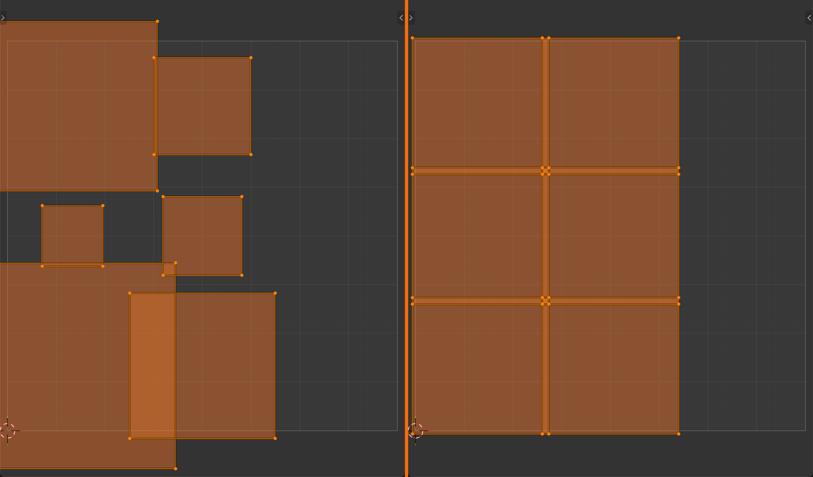
Rotating Islands
Proper island orientation makes texturing easier and can improve packing:
🔄 Island Rotation Strategies
Why rotate islands?
- Align to texture features (wood grain, fabric weave)
- Improve packing efficiency (fit more in UV space)
- Orient for easier hand painting
- Standardize orientation across similar parts
How to rotate:
- Select island (
Lover it) - Press
Rto rotate - Type angle (90, 180, etc.) for precise rotation
- Or rotate freely by moving mouse
Common rotation angles:
- 90° increments: For architectural alignment
- Arbitrary angles: For optimal packing
- Aligned to grid: For tiled textures
Straightening UV Islands
Sometimes unwrapped islands are slightly skewed or irregular. Straightening creates cleaner UVs:
📐 Straightening Techniques
Align edges:
- Switch to edge select mode (
2) - Select edge loop you want to straighten
S(scale), thenXorY, then0- Flattens selected edges to perfectly straight line
Follow Active Quads (grid-like unwrapping):
- Select faces you want to straighten
- Make sure one quad is active (last selected)
- Press
U→ Follow Active Quads - Creates perfectly rectangular UV layout based on active face
- Great for architectural surfaces, floors, walls
Use case: Straightening is especially useful for surfaces that should have perfectly aligned textures (tiles, bricks, panels)
Pinning UVs
Pinning locks UV vertices in place during unwrapping operations:
📌 UV Pinning
What is pinning?
- Marks specific UV vertices as "locked"
- Pinned vertices won't move during unwrap operations
- Rest of island adjusts around pinned points
- Shown as red vertices in UV Editor
How to pin:
- Select UV vertices you want to pin
- Press
P→ Pin - Or UV menu → Pin
- To unpin:
Alt+Por UV menu → Unpin
Use cases:
- Partial re-unwrap: Pin good areas, re-unwrap problematic areas
- Manual UV shaping: Pin corners to specific locations, unwrap fills in between
- Align to texture features: Pin specific points to match texture elements
✅ Advanced Pinning Workflow
The "pin and refine" technique:
- Do initial unwrap (creates base layout)
- Manually position corners or edges where you want them
- Pin those vertices (
P) - Select entire island and unwrap again
- Pinned vertices stay in place, rest adjusts with less distortion
- Iterate: move pins, unwrap, check result
This gives you control over general layout while letting Blender optimize distortion!
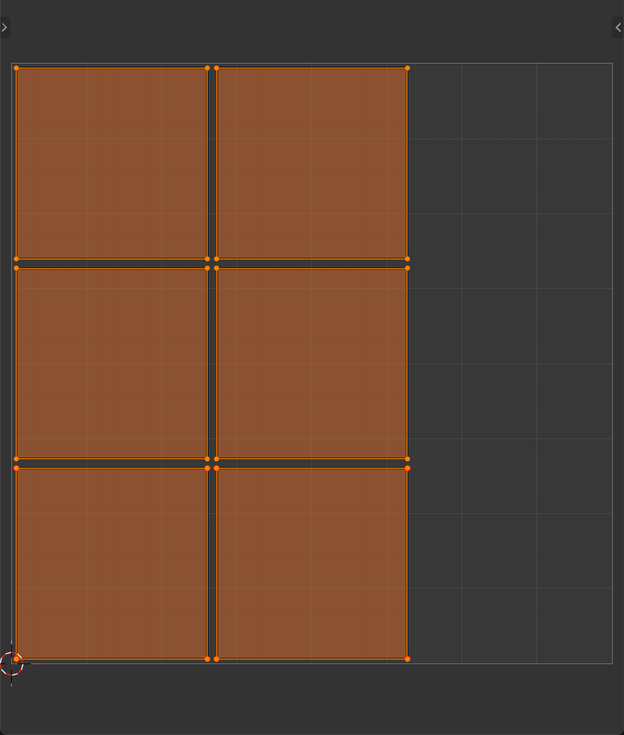
P to pin, or Alt+P to unpin, then re-unwrap to refine a layout without losing the positions you set.Welding and Stitching UVs
Sometimes you need to merge UV vertices or reconnect islands:
🔗 Welding UV Vertices
What is welding?
- Merges selected UV vertices to same location
- Like "Merge Vertices" but for UVs only
- Doesn't affect 3D geometry
How to weld:
- Select UV vertices to weld (must be from same mesh)
- Press
W→ Weld - Or right-click → Weld
- Vertices merge to average position
Stitch operation:
- Select UV edges you want to join (from two islands)
- Press
V→ Stitch - Bridges gap between islands, joining them
- Useful for fixing seam placement mistakes
Copying and Pasting UVs
Transfer UV coordinates between different parts of your mesh:
📋 UV Copy/Paste
Why copy UVs?
- Reuse unwrapping work on similar geometry
- Create symmetrical UVs quickly
- Transfer good UVs to problematic areas
Copy/paste workflow:
- Select faces with UVs you want to copy (in 3D Viewport)
- In UV Editor: UV menu → Copy UVs
- Select target faces (faces that will receive copied UVs)
- UV menu → Paste UVs
- UVs are transferred to new selection
Important: Target faces must have same topology (face count, edge flow) as source!
Mirror UVs
Create perfectly symmetrical UV layouts for symmetrical models:
🪞 UV Mirroring
The concept:
- Left and right sides of model share same UV space
- One side's UVs are flipped copy of other side
- Saves 50% of texture space!
- Perfect for characters, vehicles, symmetrical objects
Setting up mirrored UVs:
- Unwrap one half of model (with seam down middle)
- Select UVs for other half
- UV menu → Mirror → Mirror X (or Y)
- Or: Copy UVs from first half, paste to second half, then mirror
Trade-offs:
- Pro: Double the texture resolution per unique surface
- Pro: Easier to maintain symmetry in texture painting
- Con: Can't have asymmetrical details (scars, dirt on one side)
- Con: Obvious mirror repetition if not handled carefully
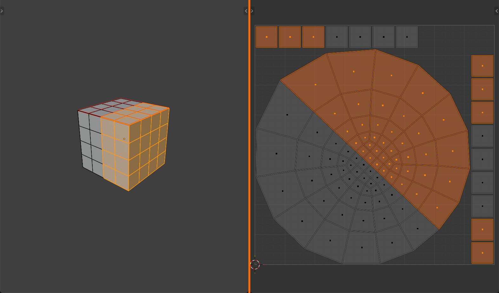
⚡ Optimizing UV Layouts
Creating a good UV layout isn't just about unwrapping—it's about optimizing for the best possible texture quality and workflow efficiency.
Texture Density
Texture density is the relationship between 3D surface area and UV space. Consistent density = consistent quality!
📊 Understanding Texture Density
What is texture density?
- How many texture pixels cover a given 3D surface area
- Measured in "pixels per unit" or "texels per unit"
- Higher density = sharper textures (more pixels per surface)
- Lower density = blurrier textures (fewer pixels per surface)
Why consistency matters:
- Inconsistent density = some parts sharp, others blurry
- Looks unprofessional and breaks immersion
- Consistent density = uniform quality across model
Checking texture density:
- Use UV Grid texture in 3D Viewport
- Checker squares should be roughly same size everywhere
- Large squares = low density (will be blurry)
- Small squares = high density (will be sharp)
✅ Achieving Consistent Texture Density
Method 1: Average Island Scale
- Select all UVs in UV Editor (
A) - UV menu → Average Island Scale
- Blender automatically scales islands proportionally
- All islands now have consistent density
Method 2: Manual visual matching
- Apply UV Grid texture to model
- Look at checker pattern in 3D Viewport
- Scale islands in UV Editor until checkers match
- Use one "reference" area as standard
UV Space Utilization
Getting the most out of your 0-1 UV square is crucial for maximum quality:
📦 Maximizing UV Space
Key principle: Fill as much of the 0-1 square as possible!
Why it matters:
- Unused UV space = wasted texture resolution
- If islands only fill 50% of space, you're only using 50% of texture
- Better packing = more pixels available = higher quality
Optimization techniques:
- Pack Islands: Use automatic packing with low margin
- Scale up: After packing, scale all islands up to fill space
- Rotate: Enable rotation in Pack Islands for tighter fit
- Remove margins: Get rid of unnecessary padding
- Stack identical islands: If you have mirrored or repeated geometry
The balance: Maximum coverage vs. practical margin (to prevent texture bleeding)
⚠️ The Margin Trade-off
Too little margin (< 0.001):
- Texture bleeding—colors from one island leak to neighbors
- Visible seams and artifacts
- Mipmap issues (blurriness causes color mixing)
Too much margin (> 0.01):
- Wasted texture space
- Lower effective resolution
- Inefficient use of texture budget
Sweet spot: 0.001 to 0.005
Larger textures (4K, 8K) can use smaller margins. Smaller textures (1K, 512px) need larger margins.
Handling Overlapping UVs
Overlapping UVs can be intentional (good) or accidental (bad):
🔄 Overlapping UV Strategies
Intentional overlapping (good uses):
- Symmetrical models: Mirror left/right to share UV space
- Repeated elements: Multiple identical parts use same UVs
- Texture reuse: Different objects sharing same texture regions
- Result: More efficient texture use, higher resolution per unique surface
Accidental overlapping (problems):
- Islands stacked on top of each other by mistake
- Causes texture painting issues (paint appears in multiple places)
- Baking problems (lighting bakes to multiple surfaces incorrectly)
Finding overlaps:
- UV Editor: Select → Select Overlap
- Highlights all overlapping UV islands
- Fix by moving islands apart
UV Channels (Advanced)
Blender supports multiple UV maps per object—each is a separate UV channel:
📺 Multiple UV Channels
What are UV channels?
- Same mesh can have multiple, completely different UV layouts
- Each UV map is independent
- Useful for different purposes per channel
Common multi-channel setups:
- UV Map 1: Main textures (color, roughness, normal)
- UV Map 2: Lightmap (for baked lighting)
- UV Map 3: Special effects (decals, wear patterns)
Managing UV maps:
- Object Data Properties → UV Maps panel
- Add new UV map with + button
- Set active map (used for editing)
- Set render map (used by materials)
When to use multiple channels:
- Game engines requiring separate lightmap UVs
- Different UV layouts for different texture purposes
- Combining tiled textures with unique textures
UV Distortion Analysis
Understanding and minimizing distortion is key to high-quality UVs:
🔍 Analyzing UV Distortion
Types of distortion:
- Stretching: UVs pulled apart (texture stretched on 3D surface)
- Compression: UVs squeezed together (texture compressed)
- Angular distortion: Angles don't match (squares become diamonds)
- Area distortion: Relative sizes don't match 3D proportions
Visualizing distortion:
- Stretch overlay: In UV Editor, enable "Display Stretch"
- Blue/Green = Good (minimal distortion)
- Yellow/Orange = Acceptable (some distortion)
- Red = Bad (heavy distortion)
- UV Grid texture: Apply to model in 3D Viewport
- Checkers should be square and uniform
- Stretched rectangles = stretching distortion
- Size variation = inconsistent texture density
Fixing distortion:
- Add seams in highly distorted areas
- Unwrap again (more islands = less distortion per island)
- Use Minimize Stretch operator (UV menu)
- Relax UVs (UV menu → Relax)
Relaxing UVs
The Relax operator smooths out UV distortion iteratively:
🧘 UV Relaxation
What does Relax do?
- Iteratively moves UV vertices to minimize distortion
- Like "smoothing" the UV layout
- Reduces stretching and compression
- Makes UV spacing more even
How to use Relax:
- Select UVs you want to relax (or select all for entire island)
- UV menu → Relax
- Or press
Alt+R(may vary by keymap) - Adjust iterations in operator panel (more = smoother)
Best practices:
- Pin border vertices first: Preserves island shape
- Use lower iterations: Start with 5-10, increase if needed
- Relax after manual adjustments: Smooths out manual positioning
Caveat: Relaxation can change island shape—use pinning to control!
🎯 The Professional UV Workflow: (1) Mark strategic seams, (2) Unwrap, (3) Check stretch overlay for red areas, (4) Add seams in red zones and unwrap again, (5) Use Relax to smooth remaining distortion, (6) Pack islands efficiently, (7) Scale to consistent texture density, (8) Final check with UV Grid. This iterative approach produces professional-quality UVs!
UV Layout Best Practices Summary
💎 Professional UV Layout Checklist
Before considering UVs "done," verify:
- ✅ Seams in logical locations (hidden, natural breaks, edges)
- ✅ Minimal distortion (mostly blue/green in stretch overlay)
- ✅ Consistent texture density (uniform checker sizes)
- ✅ Efficient UV space usage (islands fill most of 0-1 square)
- ✅ Proper margins (0.001-0.005 between islands)
- ✅ No accidental overlaps (unless intentional mirroring)
- ✅ Islands properly oriented (aligned for painting or packing)
- ✅ Appropriate island count (not too many, not too few)
- ✅ Strategic use of mirroring (if applicable)
- ✅ Clean, straightened edges (where needed for tiling textures)
🎯 Hands-On Project: UV Unwrapping a Simple Mug
Time to put everything together! In this project, you'll create and unwrap a coffee mug from scratch. This exercise combines modeling basics with proper UV unwrapping workflow, giving you a complete end-to-end experience.
🎯 Project Goals
What you'll learn:
- Complete UV unwrapping workflow from start to finish
- Strategic seam placement on a real object
- Using cylinder projection for appropriate geometry
- Packing and optimizing UV islands
- Testing UVs with checker texture
- Professional UV layout practices
Estimated time: 20-30 minutes
Step 1: Model the Mug Base
Let's start by creating the basic mug shape:
🏗️ Creating the Mug
- Start fresh:
- Delete default cube (
X→ Delete) Shift+A→ Mesh → Cylinder
- Delete default cube (
- Scale to mug proportions:
S→Z→1.5→Enter(taller)S→Shift+Z→0.7→Enter(narrower)
- Make it hollow (like a real mug):
- Enter Edit Mode (
Tab) - Switch to Face Select (
3) - Select top face
- Press
I(inset) → Move mouse inward → Click to confirm - With inner face still selected:
E(extrude) →Z→-1.2→Enter
- Enter Edit Mode (
- Add thickness to rim:
- Select top edge loop (Alt+Click the top ring)
- Add Solidify modifier (Modifier Properties → Add Modifier → Solidify)
- Thickness: 0.05
- Apply modifier (
Ctrl+Ain modifier panel)
- Smooth shading:
- Right-click in 3D Viewport → Shade Smooth
✅ Checkpoint 1
You should now have a smooth, hollow cylinder that looks like a basic mug body. The top should be open with a rim, and the bottom should be closed.
Step 2: Add a Handle
Let's give our mug a proper handle:
🔧 Creating the Handle
- Add a curve for the handle:
Shift+A→ Curve → Bezier Curve- Rotate:
R→Y→90→Enter - Position next to mug (right side)
- Shape the handle curve:
- Enter Edit Mode (
Tab) - Select and move control points to create handle arc
- Make it loop from upper mug to mid-lower area
- Adjust bezier handles for smooth curve
- Enter Edit Mode (
- Give the curve thickness:
- Select curve object
- Curve Properties → Geometry
- Bevel → Depth: 0.05
- Resolution: 4 (preview circles)
- Convert to mesh:
- Object Mode
- Select curve
- Right-click → Convert To → Mesh
- Join to mug:
- Select handle, then
Shift+Clickmug (mug should be active) Ctrl+Jto join- Now one unified object
- Select handle, then
💡 Simplification Note: If you find the curve method challenging, you can create a simple torus (Add → Mesh → Torus), scale it flat (
S→Z→0.3), delete half of it, and position as handle. Either approach works!
Step 3: Plan Your Seam Strategy
Before unwrapping, let's think strategically about seam placement:
📋 Seam Planning for the Mug
Analyze the model:
- Mug body: Cylindrical shape → needs one vertical seam
- Mug bottom: Circular face → separate island
- Inside surface: Also cylindrical → needs vertical seam
- Handle: Curved tube → needs seam along inner curve (least visible)
Our seam strategy:
- Vertical seam on back of mug (single edge from top to bottom)
- Seam around bottom edge (separates bottom circle from body)
- Seam around top inner rim (separates inside from outside)
- Seam along handle's inner curve (hidden from front view)
Result: Four distinct islands—outside body, inside body, bottom, and handle
Step 4: Mark Seams
Time to implement our seam strategy:
✂️ Marking Mug Seams
- Mark vertical seam on back:
- Edit Mode, Edge Select (
2) - Rotate view to see mug back
- Select one vertical edge on back side
- Right-click → Mark Seam (edge turns red)
- Edit Mode, Edge Select (
- Mark bottom edge seam:
Alt+Clickbottom edge loop- Right-click → Mark Seam
- Entire bottom ring should be red
- Mark inner rim seam:
Alt+Clicktop inner edge loop (where inside meets rim)- Right-click → Mark Seam
- Mark handle seam:
- Select edge loop running along inner curve of handle
- Right-click → Mark Seam
- This separates handle into one island
- Optional: Mark handle connection seams:
- Mark edges where handle meets mug body
- Creates cleaner separation between handle and body islands
✅ Checkpoint 2
Your mug should now have red seam edges visible in Edit Mode. Verify you have:
- One vertical red line on back of mug
- Red ring around bottom
- Red ring around inner top rim
- Red line along inner handle curve
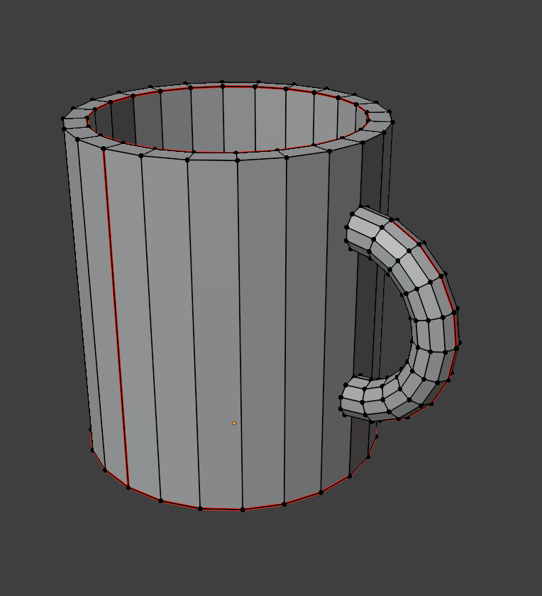
Step 5: Switch to UV Editing Workspace
🖥️ Setting Up UV Workspace
- Click "UV Editing" tab at top of Blender window
- You'll see split view:
- Left: UV Editor (empty for now)
- Right: 3D Viewport
- Make sure your mug is still selected
- Verify you're in Edit Mode
Step 6: Unwrap the Mug
Now for the main event—unwrapping!
🎯 Unwrapping Process
- Select all faces:
- In 3D Viewport (right side):
Ato select all - All faces should be highlighted
- In 3D Viewport (right side):
- Execute unwrap:
- Press
Uto open UV Mapping menu - Select "Unwrap"
- Islands appear in UV Editor (left side)!
- Press
- Check the result:
- UV Editor should show 4-5 separate islands
- Outer mug body (rectangle)
- Inner mug body (rectangle)
- Bottom circle
- Handle (curved strip)
- Adjust unwrap settings (optional):
- Check lower-left operator panel
- Method: Angle Based (default is fine)
- Margin: 0.001 (increase if islands touch)
Step 7: Organize UV Islands
Let's arrange our UV islands for optimal texture use:
📦 Packing and Arranging
- Initial automatic pack:
- In UV Editor:
Ato select all UVs - UV menu → Pack Islands
- Or right-click → Pack Islands
- Islands automatically arrange in 0-1 space
- In UV Editor:
- Rotate islands for better packing:
- Select outer body island (
Lover it) R→90→Enter(if it improves fit)- Pack again to re-arrange
- Select outer body island (
- Manual adjustments:
- Select individual islands with
L - Use
Gto reposition for better layout - Scale larger islands up (
S) to use more space
- Select individual islands with
- Final pack with rotation:
- Select all (
A) - UV menu → Pack Islands
- Enable "Rotate" in operator panel
- Margin: 0.005
- Select all (
Step 8: Check Texture Density
Ensure consistent texture quality across the mug:
📊 Texture Density Check
- Normalize island scale:
- In UV Editor:
Ato select all - UV menu → Average Island Scale
- Islands resize to proportional sizes
- In UV Editor:
- Pack again after averaging:
- UV menu → Pack Islands
- Re-arranges with new sizes
- Scale up to fill space:
- Select all (
A) S→ Scale up until islands nearly fill 0-1 square- Leave small margin at edges
- Select all (
Step 9: Apply and Test UV Grid Texture
Visualize your UVs with a checker texture:
🎨 Adding UV Test Texture
- Create UV Grid texture:
- In UV Editor: Image menu → New Image
- Name: "UV_Grid"
- Generated Type: UV Grid
- Click OK
- View texture on model:
- In 3D Viewport (right side): Change shading mode to "Material Preview" or "Rendered"
- Top-right shading mode balls, third from left
- Mug should now display checker pattern
- Alternative method (material-based):
- Switch to Shading workspace
- Add new material to mug
- Add Image Texture node
- Open UV_Grid image
- Connect to Base Color
Step 10: Analyze and Optimize
Final quality check and optimization:
🔍 Quality Assessment
Check for distortion:
- Visual inspection in 3D:
- Rotate around mug in 3D Viewport
- Checker squares should be uniform size
- Squares should be square (not stretched)
- Pattern should flow continuously (except at seams)
- UV Editor stretch overlay:
- In UV Editor header: Enable "Display Stretch"
- Choose "Area" or "Angle" from dropdown
- Blue/Green = Good
- Yellow/Red = Needs attention
- Fix any red areas:
- If you see red stretching, add more seams
- Or use Relax: Select problematic area → UV menu → Relax
✅ Final Checkpoint
Your completed mug UVs should have:
- ✅ 4-5 distinct UV islands visible in UV Editor
- ✅ Islands efficiently packed in 0-1 UV space
- ✅ Uniform checker pattern in 3D view (consistent texture density)
- ✅ Minimal stretching (mostly blue/green in stretch overlay)
- ✅ Seams hidden on back and inner surfaces
- ✅ Islands using 70-85% of available UV space
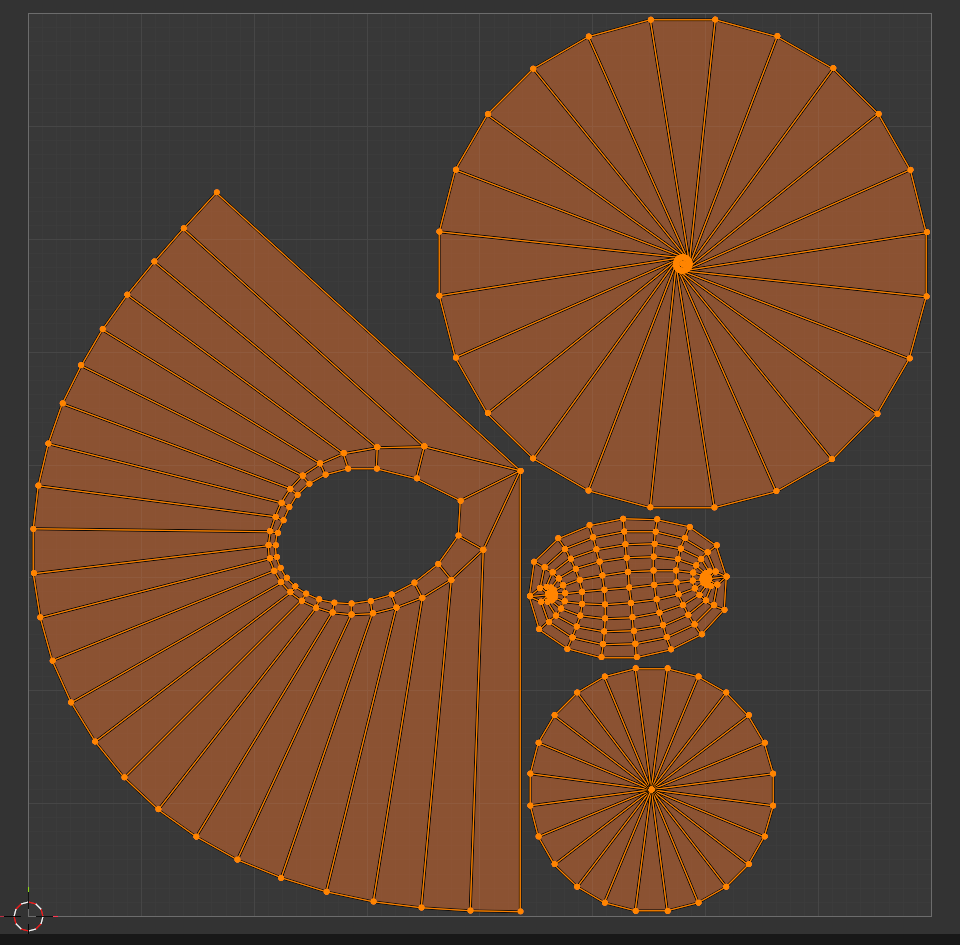
Bonus Challenges
Want to take it further? Try these additional exercises:
🌟 Advanced Exercises
Challenge 1: Mirror the handle
- Add a second handle on opposite side
- Make both handles share same UV space (overlap their UVs)
- Result: Both handles use one island = more efficient
Challenge 2: Add a logo area
- Create a small rectangle on front of mug (inset face)
- Mark seams around it
- Unwrap to create separate island for logo placement
- Position and orient this island for easy texture painting
Challenge 3: Optimize for texture painting
- Straighten the outer body island using Follow Active Quads
- Make it perfectly rectangular for easier brush strokes
- Scale it to use maximum available UV space
Challenge 4: Multi-material setup
- Assign different material to handle vs. body
- Create two UV maps (one for body, one for handle)
- Practice working with multiple UV channels
Troubleshooting Common Issues
🔧 Problem Solving
Problem: UV islands are overlapping/stacked
- Cause: Insufficient seams or unwrap issue
- Fix: Select → Select Overlap, then move islands apart manually
Problem: Checker texture is stretched on handle
- Cause: Handle curved in 3D but UVs are straight
- Fix: Add more seams along handle, or use Relax operation
Problem: Bottom circle doesn't unwrap correctly
- Cause: Might need Project from View instead of Unwrap
- Fix: Select bottom faces, view from bottom,
U→ Project from View
Problem: Can't see UV Grid on model
- Cause: Shading mode or material not set up
- Fix: Change to Material Preview mode, or set up material with image texture
Problem: Islands are tiny in UV Editor
- Cause: Unwrap created small islands
- Fix: Select all (
A), thenSto scale up, or use Pack Islands
What You've Learned
🎓 Skills Acquired
In this project, you've mastered:
- ✅ Complete UV unwrapping workflow from start to finish
- ✅ Strategic seam placement based on object geometry
- ✅ Using the UV Editing workspace effectively
- ✅ Unwrapping cylindrical and curved geometry
- ✅ Packing UV islands for efficient space usage
- ✅ Ensuring consistent texture density with Average Island Scale
- ✅ Testing UVs with checker texture
- ✅ Analyzing and fixing UV distortion
- ✅ Professional UV layout practices
You now have the skills to unwrap most simple to intermediate 3D models!
⚠️ Common UV Unwrapping Mistakes
Learning what NOT to do is just as important as learning what to do. Here are the most common mistakes beginners make (and how to avoid them):
Mistake 1: No Seams or Poor Seam Placement
❌ The Problem
Not marking seams at all, or placing seams randomly without strategy.
What happens:
- Unwrap produces heavily distorted results
- One giant island with massive stretching
- Or random cuts that break visible surfaces
The fix:
- Always plan seam locations before unwrapping
- Think: "Where would this cut naturally occur?"
- Hide seams on backs, undersides, edges, natural breaks
- Test-unwrap frequently during seam marking
Mistake 2: Ignoring Texture Density
❌ The Problem
Not using Average Island Scale, resulting in inconsistent texture quality.
What happens:
- Small details get huge UV space (wasted resolution)
- Large surfaces get tiny UV space (blurry textures)
- Model looks unprofessional with quality variance
The fix:
- Always use UV menu → Average Island Scale after unwrapping
- Check with UV Grid texture—squares should be uniform size
- Only break proportionality intentionally for hero features
Mistake 3: Leaving Islands Scattered
❌ The Problem
Not packing islands, leaving huge gaps in UV space.
What happens:
- Massive waste of texture resolution
- Islands only use 30-40% of available space
- Textures appear lower resolution than they could be
The fix:
- Always pack islands: UV menu → Pack Islands
- Scale islands up to fill 75-85% of UV space
- Leave appropriate margin (0.001-0.005) but no more
Mistake 4: Not Testing with Checker Texture
❌ The Problem
Unwrapping blindly without visual verification of distortion.
What happens:
- Don't discover stretching until texturing stage
- Have to redo UVs after investing time in textures
- Poor quality textures that look warped
The fix:
- ALWAYS apply UV Grid texture immediately after unwrapping
- Rotate model and inspect all surfaces
- Look for stretched rectangles, warped squares, size variance
- Fix issues before moving to next step
Mistake 5: Overlapping UVs Unintentionally
❌ The Problem
UV islands stacked on top of each other accidentally.
What happens:
- Painting one area affects multiple surfaces
- Baking lighting creates incorrect results
- Confusion during texture creation
The fix:
- In UV Editor: Select → Select Overlap to find overlaps
- Move overlapping islands apart
- Only overlap intentionally (mirroring, repeated elements)
Mistake 6: Too Many or Too Few Seams
❌ The Problem
Either creating a seam at every edge, or trying to unwrap with almost no seams.
What happens with too many seams:
- Hundreds of tiny islands
- Impossible to texture paint efficiently
- Visible discontinuities everywhere
What happens with too few seams:
- Extreme stretching and distortion
- Unusable UVs
- Textures look warped and wrong
The fix:
- Find the balance: enough seams to minimize distortion, few enough to keep islands manageable
- Start conservative (fewer seams)
- Add more seams only in problematic areas
- Check stretch overlay—add seams where you see red
Mistake 7: Forgetting to Check All Angles
❌ The Problem
Only checking UVs from one viewpoint.
What happens:
- Front looks perfect, but back is a disaster
- Bottom or hidden surfaces have terrible UVs
- Discover issues only after starting texturing
The fix:
- Rotate around entire model during UV check
- Inspect top, bottom, all sides
- Check hidden areas (undersides, interiors)
- Every surface matters!
Mistake 8: Not Straightening When Needed
❌ The Problem
Leaving UV islands slightly skewed or wavy when they should be rectangular.
What happens:
- Tiled textures don't align properly
- Harder to paint cleanly
- Looks unprofessional in UV layout
The fix:
- For architectural surfaces: Use Follow Active Quads
- For edge alignment: Scale edges to 0 in one axis (
S→X→0) - Use Straighten in UV menu for auto-alignment
Mistake 9: Scaling UVs Outside 0-1 Space
❌ The Problem
UVs extending beyond the 0-1 square (unless intentional tiling).
What happens:
- Texture repeats/tiles (if repeat is enabled)
- Or texture clamps at edge (stretches edge pixels)
- Parts of model don't receive proper texture
The fix:
- Keep all UVs within 0-1 square for unique textures
- Use Pack Islands to automatically constrain
- Only go outside intentionally for tiling materials
Mistake 10: Not Saving UV Work
❌ The Problem
Forgetting that UVs are part of mesh data that needs to be saved.
What happens:
- Spend hour carefully unwrapping model
- Blender crashes or you close without saving
- All UV work lost forever
The fix:
- Save regularly!
Ctrl+Sfrequently - Enable auto-save in Preferences
- UVs are saved with .blend file (not separate)
- Consider versioned saves for complex UV work
💡 The Golden Rule of UV Unwrapping: Check early, check often. The earlier you catch a UV problem, the easier it is to fix. Test with checker textures frequently, enable stretch overlay, rotate around your model. Prevention is easier than correction!
📚 Lesson Summary
Congratulations! You've completed a comprehensive introduction to UV unwrapping in Blender. Let's recap the essential concepts and skills you've mastered.
🎯 Key Takeaways
Essential UV Unwrapping Concepts:
- UV mapping creates a 2D representation of 3D surfaces
- Seams are strategic cuts that allow 3D geometry to flatten
- UV islands are the flattened pieces of your mesh
- Texture density determines quality consistency across your model
- UV space (0-1 square) is where all your texture coordinates live
- Distortion is the enemy—minimize it with good seam placement
The Complete UV Workflow
Here's the professional workflow you learned, condensed into a step-by-step reference:
✅ Professional UV Unwrapping Workflow
- Analyze the model
- Identify natural seam locations
- Consider where cuts will be least visible
- Think about how surfaces will flatten
- Mark seams strategically
- Place seams on edges, backs, undersides
- Create closed loops around logical sections
- Balance distortion vs. seam visibility
- Unwrap
- Select all faces →
U→ Unwrap - Check result in UV Editor
- Select all faces →
- Test for distortion
- Apply UV Grid texture
- Enable stretch overlay
- Identify problem areas (red zones)
- Refine seams
- Add seams where distortion is high
- Unwrap again and check improvement
- Iterate until acceptable quality
- Normalize texture density
- UV menu → Average Island Scale
- Verify uniform checker pattern
- Pack islands efficiently
- UV menu → Pack Islands
- Adjust margin (0.001-0.005)
- Enable rotation for better fit
- Optimize layout
- Scale islands to fill 75-85% of UV space
- Straighten islands if needed (Follow Active Quads)
- Manually adjust for special cases
- Final quality check
- Rotate around model viewing from all angles
- Verify no overlaps (unless intentional)
- Check that all surfaces look good
- Save your work!
Essential Keyboard Shortcuts
Quick reference for the most important UV unwrapping shortcuts:
| Shortcut | Action | Context |
|---|---|---|
Tab |
Toggle Edit Mode | 3D Viewport |
1/2/3 |
Vertex/Edge/Face select mode | Edit Mode |
Alt+Click |
Select edge loop | Edge select mode |
Ctrl+E |
Edge menu (Mark/Clear Seam) | Edge selected |
U |
UV Mapping menu | Edit Mode, faces selected |
A |
Select all | UV Editor or 3D Viewport |
L |
Select linked (hover over island) | UV Editor |
G |
Move/Grab | UV Editor |
R |
Rotate | UV Editor |
S |
Scale | UV Editor |
P |
Pin selected UVs | UV Editor |
Alt+P |
Unpin UVs | UV Editor |
Home |
Frame all | UV Editor |
N |
Toggle sidebar | UV Editor |
Core Principles to Remember
✅ The UV Unwrapping Golden Rules
1. Seams are strategic, not random
- Plan before marking
- Hide on edges, backs, undersides
- Think about how it will unwrap
2. Test early and often
- Apply UV Grid immediately
- Enable stretch overlay
- Check from all angles
3. Consistency is key
- Use Average Island Scale
- Maintain uniform texture density
- Check with checker pattern
4. Maximize texture space
- Pack islands efficiently
- Fill 75-85% of UV space
- Balance margin vs. coverage
5. Minimize distortion
- Add seams where you see stretching
- Use Relax for smoothing
- Aim for mostly blue/green in stretch overlay
6. Iterate and refine
- Unwrap is rarely perfect first try
- Add seams incrementally
- Test, adjust, test again
Understanding the Trade-offs
UV unwrapping is all about balancing competing priorities:
⚖️ The UV Balancing Act
Fewer seams vs. Less distortion:
- Fewer seams = fewer visible breaks, but more stretching
- More seams = less distortion, but more discontinuities
- Find the sweet spot for each model
Texture space vs. Margin:
- Tight packing = maximum resolution, risk of bleeding
- Wide margins = safety buffer, wasted space
- Use 0.001-0.005 as practical compromise
Proportional scaling vs. Hero surfaces:
- Proportional = consistent quality everywhere
- Strategic scaling = more detail where it matters
- Start proportional, adjust for importance
Manual control vs. Automatic tools:
- Manual = time-consuming but optimal
- Automatic = fast but less control
- Use Smart UV Project for quick tests, manual for finals
When UV Unwrapping Matters Most
🎯 Prioritizing UV Quality
Critical UV quality needed for:
- Hero assets (main characters, products, focal points)
- Close-up shots
- Hand-painted textures
- Photorealistic rendering
- Objects with unique textures (not tiling materials)
Can use quick/automatic unwrapping for:
- Background objects
- Objects far from camera
- Models using only tiling materials
- Temporary/placeholder assets
- Conceptual/blockout work
Your UV Unwrapping Toolkit
Quick reference of the tools you learned:
🧰 UV Tools Reference
Unwrapping methods:
- Unwrap: Main method, uses seams, best for most models
- Smart UV Project: Automatic, no seams needed
- Project from View: Camera-based projection, for decals
- Cube/Cylinder/Sphere: Primitive projections
- Follow Active Quads: Creates grid-like layout
Organization tools:
- Pack Islands: Automatic efficient arrangement
- Average Island Scale: Normalize texture density
- Align/Straighten: Clean up island edges
- Mirror: Create symmetrical UVs
Editing tools:
- Pin/Unpin: Lock UV vertices
- Weld: Merge UV vertices
- Stitch: Join UV islands
- Relax: Smooth out distortion
Analysis tools:
- Display Stretch: Visualize distortion
- UV Grid texture: Test pattern for quality check
- Select Overlap: Find stacked islands
Next Steps in Your UV Journey
🚀 Advancing Your UV Skills
Practice projects to try:
- Simple objects: Unwrap a book, a box, a bottle, a phone
- Organic shapes: Unwrap a rock, an apple, a simple creature
- Character parts: Unwrap a hand, a head, a full humanoid
- Hard surface: Unwrap a sword, a robot, mechanical parts
- Architectural: Unwrap a room, a building facade
Advanced topics to explore:
- UDIM workflows (multiple texture tiles)
- UV layout for game engines (lightmap UVs)
- Advanced UV manipulation with Python scripting
- Multi-resolution UV strategies
- UV animation and morphing
Skills that build on UV unwrapping:
- Texture painting (Lesson 13)
- PBR material creation
- Baking (normals, ambient occlusion)
- Substance Painter workflows
- Photogrammetry processing
Common Scenarios and Solutions
💡 UV Problem-Solving Guide
Scenario: Character face needs maximum detail
- Solution: Give face island 2-3x more UV space than proportional size
- Scale other less important islands down
- Place face island in prominent UV location
Scenario: Symmetrical character model
- Solution: Mirror UVs so left/right share same space
- Mark seam down centerline
- Unwrap one half, mirror to other half
- Saves 50% texture space!
Scenario: Repeating architectural elements
- Solution: Stack UVs for identical elements
- All windows share same UV island
- All doors share same UV island
- Much more efficient than unique UVs
Scenario: Tiling brick wall texture
- Solution: Use Follow Active Quads
- Scale UVs larger than 0-1 (e.g., 5x5)
- Texture tiles/repeats across surface
- No need for unique texture
Scenario: Model with severe stretching
- Solution: Add more seams in red zones
- Break large islands into smaller islands
- Accept more seams for better quality
- Use Relax to smooth remaining distortion
🎓 Remember: UV unwrapping is a skill that improves with practice. Every model teaches you something new about geometry, topology, and texture mapping. Don't expect perfection on your first try—even professionals iterate multiple times to achieve optimal results!
Final Thoughts
🌟 You're Now a UV Unwrapper!
UV unwrapping might have seemed mysterious and complicated at first, but you now understand:
- ✅ Why UV mapping exists and how it works
- ✅ How to strategically plan and mark seams
- ✅ Multiple unwrapping methods for different situations
- ✅ How to use the UV Editor effectively
- ✅ Techniques for manipulating and optimizing UV islands
- ✅ How to test, analyze, and refine UV layouts
- ✅ Common mistakes and how to avoid them
- ✅ Professional workflows and best practices
Most importantly: You completed a full hands-on project and created professional-quality UVs yourself!
🎯 What's Next?
With UV unwrapping mastered, you're ready to bring your models to life with textures and materials!
📚 Coming Up: Lesson 13 - Texture Painting Basics
In the next lesson, you'll learn:
- How to paint directly on 3D models using the UVs you created
- Texture painting workspace and tools
- Brush types and settings
- Creating hand-painted textures
- Blending colors and creating realistic details
- Painting with layers and masks
- Exporting textures for use in materials
Your UV unwrapping skills will be essential! Good UVs make texture painting easy and enjoyable. Poor UVs make it frustrating. You now have the foundation for success!
⚡ Quick Practice Suggestions
Before moving to the next lesson, reinforce your skills:
- Unwrap 3 simple objects (pen, cup, book) using today's workflow
- Challenge yourself: Unwrap something organic (apple, rock, simple character)
- Experiment with mirroring: Create a symmetrical object and mirror its UVs
- Practice seam placement: Unwrap the same object with different seam strategies
- Compare methods: Try Smart UV Project vs. manual seaming on same model
Spend 30-60 minutes practicing, and UV unwrapping will become second nature!
🎓 Additional Resources
Want to dive deeper?
- Blender Manual: UV Editing section has detailed technical documentation
- Community forums: BlenderArtists, r/blender for specific problems
- Video tutorials: Search for "Blender UV unwrapping" for visual learning
- Practice models: Download free models to practice unwrapping
Remember: The best way to learn UV unwrapping is by doing. Every model you unwrap teaches you something new!
🎉 Congratulations!
You've completed Lesson 12: UV Unwrapping Basics!
You've gained a critical skill that bridges modeling and texturing. UV unwrapping is one of those fundamental skills that every 3D artist must master, and you're now equipped with professional workflows and best practices.
Take a moment to appreciate what you've learned—UV unwrapping is often considered one of the more challenging aspects of 3D art, yet you've conquered it with hands-on practice and real-world examples!
Ready to put those UVs to work? Let's move on to texture painting! 🎨